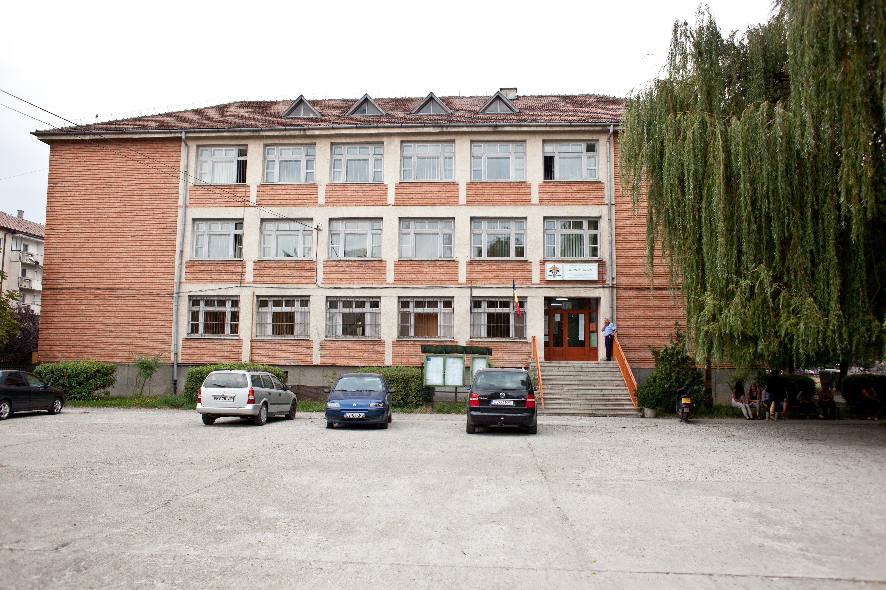

Iskolánk 1974 szeptemberében létesült, a Tanügyi és a Belkereskedelmi Minisztériumok közös Rendelete alapján. Egy évig az utóbbi hatáskörébe tartoztunk. A Kriza János utca 1 szám alatti épületben kaptunk helyet. Három kilencedik osztályban 134 tanuló képviselte az első diáknemzedéket. Ez nagy esemény volt, ugyanis Kovászna megyében nem létezett állami kereskedelmi oktatás. Aki abban az időben az állami kereskedelmi iskolát akart végezni, el kellett menjen Gyergyószentmiklósra vagy Brassóba. Bunika Mihály, az akkori megyei kereskedelmi vezérigazgató érte el, hogy városunkban létesülhetett egy állami kereskedelmi szakközépiskola.
A tanulólétszám évről-évre növekedett, ezért 1976 szeptemberében a Kálvin téren levő 3. számú Általános Iskola épületébe költöztünk. A tantestület nagy része frissen diplomázott tanárokból, valamint huszonéves szakoktatókból állt. Mindannyian bizonyítani akartak.
A tanulólétszám évről-évre növekedett, ezért 1976 szeptemberében a Kálvin téren levő 3. számú Általános Iskola épületébe költöztünk. A tantestület nagy része frissen diplomázott tanárokból, valamint huszonéves szakoktatókból állt. Mindannyian bizonyítani akartak.
Iskolánk 1974 és 1990 között a következő területeken nyújtott szakképzést: kereskedelmi, pénzügy-könyvvitel, vendéglátóipari, de 1977-85 között minden évfolyamon volt egy-egy könnyűipari osztály is. Az új évezredben folyamatosan modernizáljuk képzési kínálatunkat: 2, 3 és 3+ szintű szakképzést nyújtunk gazdasági, közigazgatási, kereskedelmi, vendéglátói, szállodai szakmákban, de kétévente indul egy-egy fodrász, illetve élelmiszeripari osztályunk is. Vegyes iskola voltunk, román és magyar tagozattal, de az évek folyamán fokozatosan megszűnt a román tagozat, az utolsó osztály 2011-ben ballagott el.
Az évek során számos, hazai és anyaországi tanintézménnyel volt/van partnerkapcsolatunk: 1992-től a csíkszeredai Joannes Kajoni Szakközépiskolával, 1994-től a budapesti Berzeviczy Gergely Közgazdasági és Külkereskedelmi Szakközépiskola és Gimnáziummal, 2000-től a kiskunhalasi II. Rákóczi Ferenc Informatikai, Közgazdasági és Mezőgazdasági Szakközépiskolával, 2001-től a tokaji Kereskedelmi és Idegenforgalmi Középiskolával. A „Határtalanul” program pedig új barátokkal ajándékozott meg: a kiskunfélegyházi Kossuth Lajos középiskola, az egri Szent Lőrincz Vendéglátói és Idegenforgalmi Szakközépiskola, a veszprémi Jendrassik-Venesz Középiskola és Szakiskola tanárai és diákjai.
Számos pályázatot nyújtottunk be az Apáczai Közalapítványhoz, az Illyés Közalapítványhoz, a megyei, illetve városi Önkormányzathoz, nagy részüket pozitívan birálták el, így segítségükkel berendeztük és felszereltük a tanirodát és a fodrászmühelyt, kiegészítettük a tankonyha, a felszolgálási laboratórium és a kereskedelmi szaktanterem felszerelését, felújítottuk a kémia és multimédia laboratóriumokat.
Nyertes lett a PHARE TVET 2004-2006 programra beadott pályázatunk is, így 2009-ben sikerült megnyitni az iskola új tanmühelyét, megfelelő berendezéseket, eszközöket is kapunk a modern képzésekhez. Ez egy minőségi ugrást jelent a szakmai és gyakorlati oktatásban, ugyanis itt a pincér-, szakács-, kereskedelmi és szállodai szakos diákjaink majdnem élő körülmények között tudják elsajátítani a szakma csínját-bínját.
Laborfalvi Berde Áron (Laborfalva, 1819. március 8. – Kolozsvár, 1892. június 25.) magyar jogász, közgazdász, egyetemi tanár, a Magyar Tudományos Akadémia levelező tagja, az első magyar meteorológiai és klimatológiai szakkönyv szerzője, a Kolozsvári Tudományegyetem első rektora.
A székely laborfalvi Berde család sarja. Az algimnáziumot 1827-től Székelykeresztúron, a felsőbb osztályokat 1837-től a kolozsvári unitárius főiskolában végezte. 1841 augusztusában a kolozsvári unitárius kollégiumhoz választották meg tanárnak. További tanulmányok folytatása céljából 1842-ben Berlinbe ment, hol két évig maradt és a természettudományokat tanulmányozta. A szünidőt tanulmányi utazásokra használta; fölkereste a híresebb egyetemeket, Giessenben a vegytani elemzés érdekében egy hónapot töltött; majd Franciaország és Svájc egy részét utazta be. Hazatérte után 1844. október elején foglalta el a tanári székét, ott 1863-ig a természettudományok oktatásával foglalkozott. Ekkor szervezték meg a kolozsvári jogakadémiát, ahol tanszéket kapott mint a nemzetgazdaság és politika rendes tanára; utóbb a statisztika, pénzügytan, az osztrák birodalomhoz tartozó országok történelme jutottak neki rendkívüli tantárgyakul. A kolozsvári egyetem létrehozásakor nevezték ki nyilványos rendes tanárrá a nemzetgazdaság- és pénzügytan tanszékre; 1872–73-ben az egyetem első rektora, 1883–84-ben pedig a jog- és államtudományi kar dékánja volt. 1890 őszén nyugalomba vonult. A Magyar Tudományos Akadémia 1858. december 15-én választotta levelező tagjai sorába.